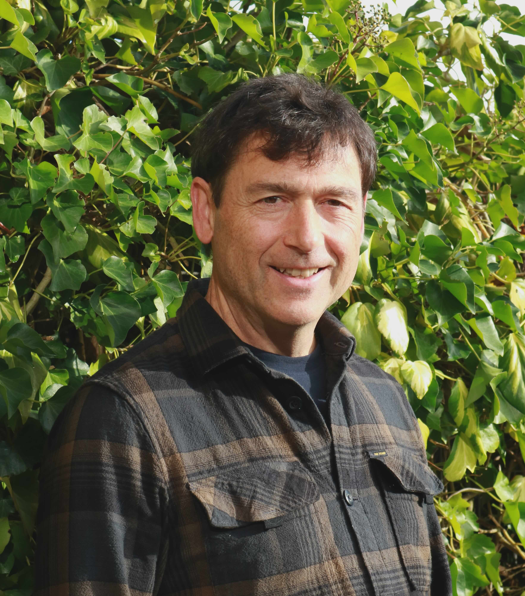
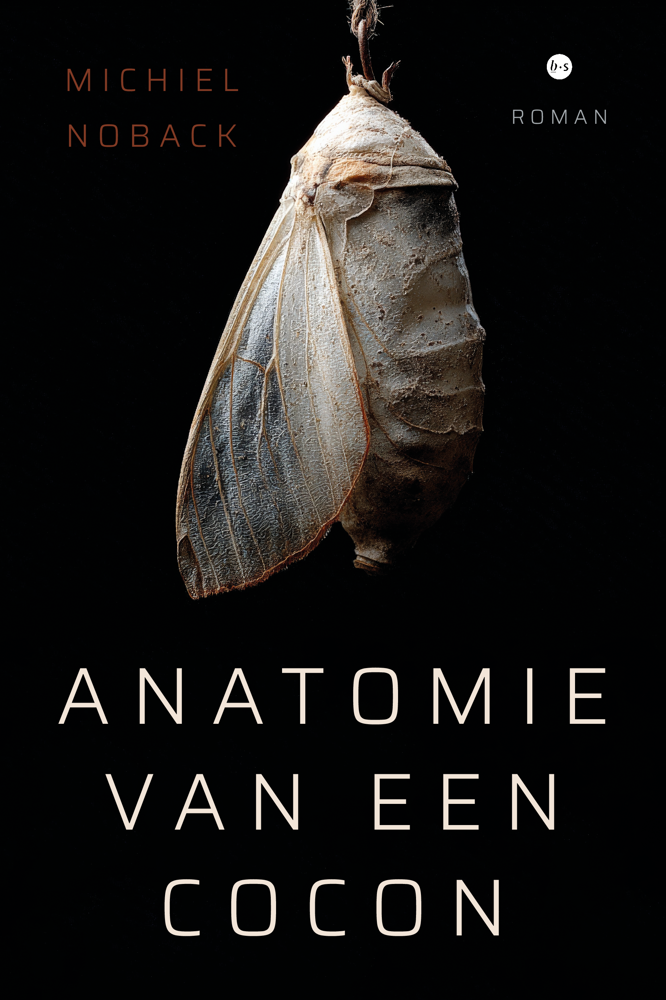
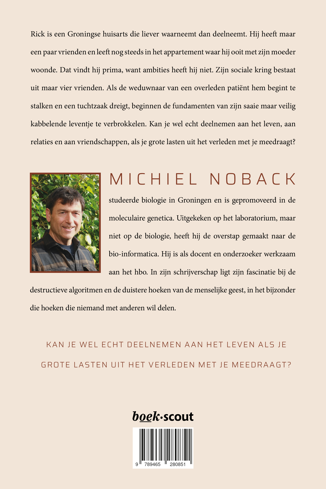
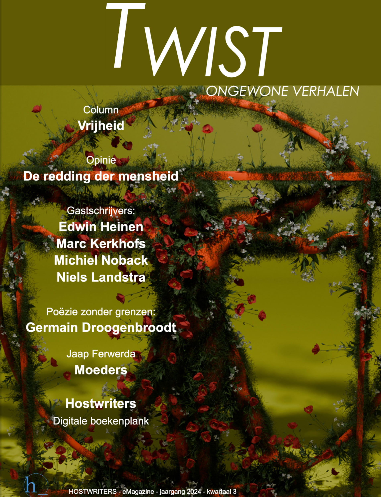

Ik studeerde biologie in Groningen en ben lang geleden gepromoveerd in de moleculaire genetica.
Uitgekeken op het laboratorium, maar niet op de biologie, heb ik de overstap gemaakt naar
de bio-informatica. Ik ben als docent en onderzoeker werkzaam aan de Hanze hogeschool in Groningen.
De stad Groningen is echt mijn thuishaven, alhoewel ik waarschijnlijk voor altijd import zal blijven voor de echte Groningers.
In mijn schrijverschap ligt mijn fascinatie bij de destructieve algoritmen en de duistere hoeken van
de menselijke geest, in het bijzonder die hoeken die niemand met anderen wil delen.
In januari 2026 is mijn eerste roman verschenen: Anatomie van een Cocon.
Deze is (bij voorkeur) te bestellen via Boekscout hier
(geen verzendkosten) of via je favoriete locale boekhandel, maar het kan ook gewoon via bol.com.
Meer details kun je vinden onder de sectie Publicaties.
Misschien denk je wel: "Wat een basic website, voor een bio-informaticus." Dat klopt,
ik heb wel andere dingen te doen als ik niet aan het werk ben als bio-informatics -- schrijven bijvoorbeeld.
Onlangs is mijn eerste roman verschenen: Anatomie van een Cocon.
Deze is (bij voorkeur)te bestellen via Boekscout hier,
of je favoriete locale boekhandel, maar het kan ook gewoon via bol.com.


Mijn eerste en tot nu toe enige gepubliceerde verhaal is op de site van Hostwriters te vinden in hun online magazine genaamd Twist.
Zie hier.
Een losse pdf van het verhaal is
Schroefje is hier te lezen.

Voor diegenen die voor de grap een compleet outdated proefschrift willen lezen, kunnen
hier terecht.
Verder zal ik daar geen woorden aan vuil maken.
Hieronder een paar gedichten die ik de moeite waard vind om te delen.
De meeste zijn geschreven in de periode 2022-2024 tijdens mijn schrijverscursussen.
Meer volgt hopelijk snel...
Neem gerust contact met mij op via het onderstaande formulier.
Ik zal proberen zo snel mogelijk contact met je op te nemen